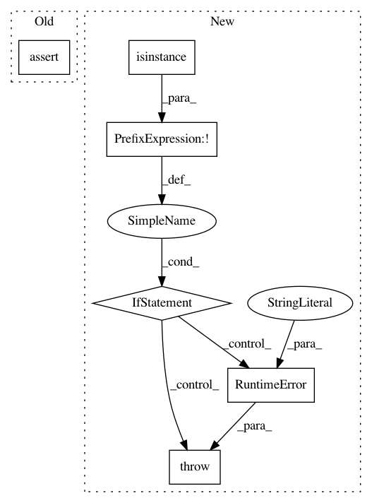

f3f27db5c0ab70f443b5f091fbd6a6f9ffa9eefd,gpytorch/inference/exact_gp_inference.py,ExactGPInference,__init__,#ExactGPInference#Any#,9
Before Change
class ExactGPInference(Inference):
def __init__(self, likelihood):
assert(isinstance(likelihood, GaussianLikelihood),
"Exact GP inference is only defined for GaussianLikelihoood")
super(ExactGPInference, self).__init__(likelihood)
def run_(self, latent_distribution, train_x, train_y):
After Change
class ExactGPInference(Inference):
def __init__(self, likelihood):
if not isinstance(likelihood, GaussianLikelihood):
raise RuntimeError("Exact GP inference is only defined for GaussianLikelihoood")
super(ExactGPInference, self).__init__(likelihood)
def run_(self, latent_distribution, train_x, train_y, optimize=True, log_function=None, **optim_kwargs):
In pattern: SUPERPATTERN
Frequency: 3
Non-data size: 6
Instances
Project Name: cornellius-gp/gpytorch
Commit Name: f3f27db5c0ab70f443b5f091fbd6a6f9ffa9eefd
Time: 2017-06-21
Author: gpleiss@gmail.com
File Name: gpytorch/inference/exact_gp_inference.py
Class Name: ExactGPInference
Method Name: __init__
Project Name: cornellius-gp/gpytorch
Commit Name: 47e7ac4b9f50e332ada62f85b5fecd76fcb14827
Time: 2017-07-12
Author: jrg365@cornell.edu
File Name: gpytorch/likelihoods/bernoulli_likelihood.py
Class Name: BernoulliLikelihood
Method Name: forward
Project Name: kkroening/ffmpeg-python
Commit Name: 086613bb0934502be86bfe22c9203ed17abde0c4
Time: 2017-06-30
Author: davide@depau.eu
File Name: ffmpeg/nodes.py
Class Name: GlobalNode
Method Name: __init__